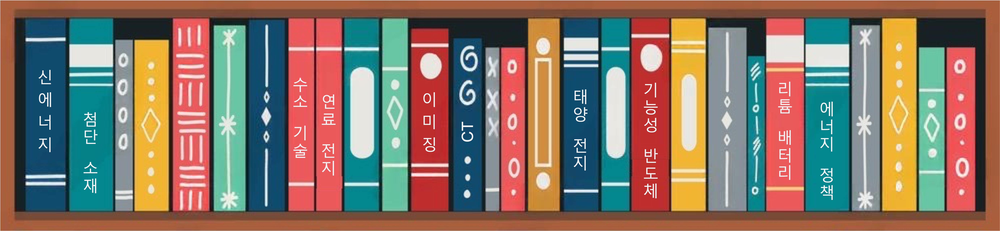
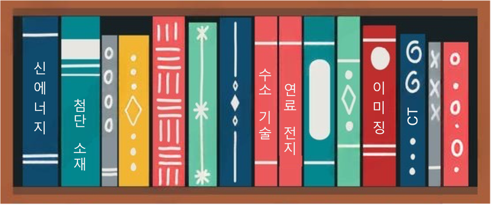

연구 요약
전력망을 위한 수소-전기 협조형 저탄소 에너지 시스템

출판물
정책 연구
- 에너지 경제 / 정책 / 전략:
-
H. Xu* [기여자 & 저자] 등.
불확실한 미래와 재구상된 연결 - 기술 연결: 불평등 문제 해결을 위한 정책 (제4장)
출판사:[잘츠부르크 글로벌] [한국고등교육재단]
2025 | 사고 자료 & 작업 보고서 [PDF] [챕터] -
H. Xu* [ETH]
Hydrogen Development in China and the EU: A Recommended Tian Ji’s Horse Racing Strategy [W]
번역: 중유럽에서의 수소 에너지 발전 전망 - Tian Ji 의 경마 전략의 시사점
제출 채택:[국제 재생 가능 에너지 기구] [IRENA 국제 에너지 워크숍]
2024 | 정책 연구 작업 논문 [PDF]
과학적 연구
- 신에너지 기술 / 전기화학 기술:
-
S. N. Artigas, H. Xu* [FDB], F. Mack
Use of distribution of relaxation times analysis as an in-situ diagnostic tool for water management in PEM fuel cells applications [J]
번역: 원위 질소교환막 연료전지 진단 도구: 이완 시간 분포를 물 관리에 응용
공동 연구:[독일 코데바 그룹] | 인용:[칭화대학교]
2024 | J. Power Sources [PDF] -
H. Xu* [PSI], M. Bührer, F. Marone, Prof. T. J. Schmidt, F. N. Büchi,
J. Eller
Effects of gas diffusion layer substrates on PEFC water management: Part II. In situ liquid water desaturation via evaporation [J]
번역: 가스 확산층 기판이 PEFC 물 관리에 미치는 영향 II: 원위 액체수 증발로 인한 탈수 연구
공동 연구:[스위스 광원/PSI] | 인용:[토요타 자동차] [독일 보쉬]
2022 | J. Electrochem. Soc. [PDF] -
S. van Rooij, M. Magnini, A. Mularczyk, H. Xu* [PSI], F. N. Büchi
[PSI], Prof. S. Haussener
[EPFL]
Conductive heat transfer in partially saturated gas diffusion layers with evaporative cooling [J]
번역: 자가 증발 냉각 설계를 사용한 부분 포화 가스 확산층에서의 전도 열전달 연구
공동 연구:[스위스 광원/PSI] [로잔 연방 대학교]
2022 | J. Electrochem. Soc. [PDF] -
H. Xu* [PSI], S. Nagashima [Toyota], H. Nguyen, K. Kishita, F. Marone,
F. N. Büchi, J. Eller
[PSI]
Temperature dependent water transport mechanism in PEFC gas diffusion layers revealed by subsecond operando X-ray tomographic microscopy. [J]
번역: 서브초 원위 X선 단층 촬영 기술로 PEFC 가스 확산층에서의 온도 의존성 수송 메커니즘 규명
공동 연구:[토요타 자동차] | 인용:[독일 보쉬] [칭화대학교] [토론토 대학교]
2021 | J. Power Sources [PDF] -
H. Xu* [PSI], M. Bührer, F. Marone, Prof. T. J. Schmidt [ETH], F. N.
Büchi, J. Eller [PSI]
Effects of gas diffusion layer substrates on PEFC water management: Part I. Operando liquid water saturation and gas diffusion properties [J]
번역: 가스 확산층 기판이 PEFC 물 관리에 미치는 영향 I: 원위 액체수 포화도와 가스 확산 특성 연구
공동 연구:[스위스 광원/PSI] | 인용:[독일 우주센터] [토요타 자동차] [칭화대학교]
2021 | J. Electrochem. Soc. [PDF] -
C. Csoklich, H. Xu* [PSI], F. Marone, Prof. T. J. Schmidt [ETH], F. N.
Büchi [PSI]
Laser Structured Gas Diffusion Layers for Improved Water Transport and Fuel Cell Performance [J]
번역: 수송 및 연료전지 성능 개선을 위한 레이저 구조화된 가스 확산층
공동 연구:[스위스 광원/PSI] | 인용:[도쿄 공과대학교] [홍콩 과학기술대학교] [칭화대학교]
2021 | ACS Appl. Energy Mater. [PDF] -
Y. Nagai [Toyota], J. Eller, T. Hatanaka, S. Yamaguchi, S. Kato, F. Marone, H.
Xu* [PSI], F. N.
Büchi.
Improving water management in fuel cells through microporous layer modifications: Fast operando tomographic imaging of liquid water. [J]
번역: 미세 다공층 개조를 통한 연료전지 물 관리 개선: 액체수의 빠른 원위 X선 단층 촬영
공동 연구:[토요타 자동차] | 인용:[매사추세츠 공과대학교] [독일 우주센터] [국가전력투자]
2019 | J. Power Sources [PDF]
- AI / 컴퓨터 비전 / 4D 이미지화:
-
M. Bührer, H. Xu* [PSI], A. Hendriksend, F. N. Büchi, J. Eller, Prof.
M. Stampanoni [ETH], F.
Marone [SLS]
Deep learning based classification of dynamic processes in time-resolved XTM [J]
번역: 시간 분해 X선 단층 촬영 기술을 이용한 동적 프로세스의 심층 학습 기반 분류
공동 연구:[스위스 광원/PSI] [CWI 암스테르담] | 인용자:[스탠포드 대학교] [아헨 공과대학교]
2021 | Scientific Reports [PDF] -
M. Bührer, H. Xu* [PSI], J. Eller, Prof. J. Sijbers, Prof. M.
Stampanoni [ETH], F. Marone
[SLS]
Unveiling water dynamics in fuel cells from time-resolved tomographic microscopy data [J]
번역: 시간 분해 X선 단층 촬영 데이터를 사용하여 연료 전지의 물 동역학을 밝혀내다
공동 연구:[스위스 광원/PSI] [안트워프 대학교] | 인용자:[도쿄 대학교] [토론토 대학교]
2021 | Scientific Reports [PDF] -
H. Xu* [PSI], M. Bührer, F. Marone, Prof. T. J. Schmidt [ETH], F. N.
Büchi, J. Eller [ETH]
Optimal image denoising for operando XTM of liquid water in PEFC gas diffusion layers. [J]
번역: PEFC 가스 확산층에서 액체 물의 원위 X선 단층 촬영 이미지를 최적의 노이즈 제거로 개선
공동 연구:[스위스 광원/PSI] | 인용자:[중국 과학원 대련 화학 물리 연구소] [토론토 대학교] [런던 대학교 유니버시티 컬리지]
2020 | J. Electrochem. Soc. [PDF] -
H. Xu* [PSI], F. Marone, S. Nagashima, H. Nguyen, K. Kishita, F. N.
Büchi, J. Eller
(초청) Exploring sub-second and sub-micron XTM imaging of liquid water in PEFC GDLs. [J]
번역: (초청 논문) PEFC 가스 확산층에서 액체 물의 서브초 및 서브마이크론 X선 단층 촬영 이미징 기술 탐구
공동 연구:[스위스 광원/PSI] [토요타 자동차] | 인용자:[유럽 동기 방사선] [미국 국가 연료 전지 센터] |[ECS 회의 여행상]
2019 | ECS Transactions [PDF] -
H. Xu* [PSI], M. Bührer, F. Marone, Prof. T. J. Schmidt [ETH], F. N.
Büchi, J. Eller [PSI]
Fighting the noise: towards the limits of subsecond X-ray tomographic microscopy of PEFC. [J]
번역: 노이즈와의 싸움: PEFC의 서브초 X선 단층 촬영 기술의 한계로 나아가기
공동 연구:[스위스 광원/PSI] | 인용자:[미국 아르곤 국가 연구소] [토요타 자동차] |[스위스 광원] |[ModVal 최우수 보고서 상]
2017 | ECS Transactions [PDF]
- 재료 과학 / 화학 공학:
-
Prof. H. Zhang, R. Wu, H. Xu* [BJTU], F. Li, S. Wang, J. Wang [BJUT],
T. Zhang
A simple spray reaction synthesis and characterization of hierarchically porous SnO2 microspheres for an enhanced dye sensitized solar cell. [J]
번역: 염료 감응형 태양전지를 강화하기 위한 계층적 다공성 SnO2 미세구슬의 간단한 스프레이 반응 합성 및 특성 분석
2017 | RSC Advances [PDF][BJTU] -
장휘 교수 [BJTU], 徐泓* [BJTU], 만금수, 엄루팅 교수, 다이춘아이
Preparations of new porous oxides spherical powders by spray reaction technique. [J]
번역: 스프레이 반응법을 이용한 새로운 다공성 산화물 구형 분말의 제조 [J]
2012 | 《진공 및 저온》 [링크][BJTU] -
기효월, 徐泓* [BJTU], 주흥진
Degradation of highly active cypermethrin via ultrasonic irradiation combined with photocatalysis by TiO2
번역: 초음파-이산화티타늄 광촉매 복합법에 의한 고효율 시페르메스린 분해 [J]
2012 | 《화학 연구》 [링크][BJTU]
기술 특허
-
환형 기액 계면 점프 자석 선별 장치 [P]
발명자: 富鳴 교수, 張輝 교수, 徐泓[BJTU], 顔魯婷 교수
2013 | 중국 발명 특허 번호: CN102441489B, 효력 발생일: 2013.10.11. [특허 파일] -
연속 운전 가능한 기액 계면 점프 자석 선별 제어 환형 장치 [P]
발명자: 張輝 교수, 徐泓[BJTU], 富鳴 교수, 顔魯婷 교수
2013 | 중국 발명 특허 번호: CN102441490A, 효력 발생일: 2013.11.01. [특허 파일] -
초음파 - 광촉매 산화 결합 과일 및 채소 세척 장치 [P]
발명자: 周興振, 徐泓[BJTU], 江紅 교수, 祁晓月
2012 | 중국 실용 신형 특허 번호: CN202311136U, 효력 발생일: 2012.05.09. [특허 파일]
기술 보고서
-
H. Xu [PSI], J. Eller
연료 전지의 온도에 따른 물 수송 메커니즘 [R]
2021 | 연례 보고서 및 과학적 하이라이트，[폴 셰러 연구소] ，빌리겐, 스위스 [PDF] -
H. Xu [TUM], Dr. B. Vinçon-Leite, Y. Luo
Modelling of Cyanobacteria Dynamics for YuQiao Reservoir in Tianjin, China [R]
번역: 중국 톈진시의 유교댐에서의 남조류 동역학 모델 연구 [R]
2016 | 훈련 보고서.[에콜 드 폰 파리텍] &[에콜 폴리테크니크] . 파리, 프랑스. -
H. Xu [UR1], Dr. W. Lu, Dr. A. Madsen, Prof. S. Di Matteo
Design and Construction of a Test-Stand for the Split and Delay Line at the European XFEL [R]
번역: 유럽 X선 자유전자 레이저의 분할 및 지연 라인 테스트 스탠드 설계 및 구축 [R]
2015 | 인턴십 보고서.[유럽 XFEL] , 함부르크, 독일. [PDF]
증권 연구
- 산업 매크로 연구 (대중화 지역):
2022 | 신에너지 산업: 두 가지 탄소 정책 하의 중국 신에너지 산업의 창업 동력
2020 | 신소재 산업: 반도체 소재 시리즈 제4편: 5G를 촉진하는 광통신 산업 체인, 인듐 화합물 소재 준비 완료
- 1차 시장 연구 (A에서 D 라운드 자금 조달 기업):
2021 | 유시과기: 기술 선도자 시리즈 보고서: 다중 장면 자율주행 솔루션 제공업체
2021 | 신치과기: 기술 선도자 시리즈 보고서: 스마트카 자율 IP 칩 제공업체
2021 | 시안이시웨이: 시안이시웨이 연구 분석 보고서
- 2차 시장 연구 (중국 A주 & 미국 주식 상장 기업):
2021 | 후귀산업 (688126.SH): 대형 실리콘 웨이퍼의 리더가 칩 국산화 대체를 선도한다 (첫 번째 커버 보고서)
2021 | CREE (NASDAQ:CREE): 기술 선도자 시리즈 보고서: 글로벌 전력/RF 디바이스 및 LED 제공업체 (미국 주식)
2021 | 경위항윤 (688326.SH): 기술 선도자 시리즈 보고서: 자동차 전자 기술 시스템 서비스 제공업체
2020 | 천과합다 (870013.OC): 국내 최고 SiC 칩 제조업체
2020 | 리앙위 (605358.SH): 국산 대체 시장의 확대, 대형 실리콘 웨이퍼 산업화가 눈앞에
2020 | 국자재료 (300285.SZ): 치과용 세라믹 소재 산업, 지르코니아 소재의 호조 동향
공개 데이터셋
-
TomoBank: 연료 전지 X선 이미징 데이터셋
큐레이터: M. Bührer, H. Xu* [PSI], F. Marone
2019 | 아르곤 국립 연구소 - 미국 에너지 부 © 저작권. Rev. f4253f55. [링크]
조교 강좌
-
「재생 가능 에너지 기술 II - 에너지 저장 및 에너지 변환」
취리히 공과대학교, 석사 과정 (529-0191-01L )
2017-2019 | 봄 학기 [강좌 링크]
학술 회의
- 에너지 및 기후 / 저탄소 교통 / 정책 및 경제:
-
H. Xu, Connecting Technologies: Uncertain Futures, Connections
Reimagined
2024 | 한국 고등교육재단 - 잘츠부르크 글로벌 세미나, 잘츠부르크, 오스트리아. [회원] [링크] -
H. Xu, Sixtieth session of the Subsidiary Body for Scientific and
Technological Advice
2024 | UN 본 기후변화 회의, 본, 독일. [연설자] [링크] -
H. Xu, China Telecom - Construction and Development of New Low-altitude
Economic
Infrastructure
2024 | 저고도 경제 개발 회의, 우후, 중국. [참여] [링크] -
H. Xu, First session of the UNECE Informal Task Force on E-mobility
2024 | UN 유럽 경제위원회 - 내륙교통 & 지속 가능한 에너지 부문, 제네바, 스위스. [회원] [링크] -
H. Xu, IRENA-IEW Workshop: Innovative insights on long-term energy
transitions
2024 | 국제재생에너지기구, 본, 독일. [논문 채택] [링크] -
H. Xu, Creating the environment for a hydrogen economy: policies and
regulations
2024 | 옥스포드 대학교 세인트 캐서린 칼리지, 옥스포드, 영국. [연설자] [링크] -
H. Xu, Confronting Scarcity: Towards a Time of Protracted Scarcity
2024 | 제53회 성갈렌 심포지엄, 성갈렌, 스위스. [학술 심사] [링크] -
H. Xu, Interdependencies between energy and transport in the context of
climate adaptation
2024 | UN 유럽 경제위원회 - 내륙교통 기후변화 영향 평가 및 적응 전문가 그룹 회의, 제네바, 스위스. [연설자] [링크] -
H. Xu, Chinese Energy Transition and Technology Innovation (분과 회의)
2023 | UN 본 기후변화 회의, 본, 독일. [사회자/연설자] [링크] -
H. Xu, Global Tech Conference: Where Business Innovation Makes a
Difference
2023 | ICT 봄 회의, 룩셈부르크. [참여] [링크] -
H. Xu, A New Generational Contract: Redefining What We Owe Each
Other
2023 | 제52회 성갈렌 심포지엄, 성갈렌, 스위스. [학술 심사] [링크] -
H. Xu, Innovation & Entrepreneurship: The Effect of Public Science on
Corporate R&D
2023 | 막스플랑크 혁신 및 경쟁 연구소, 뮌헨, 독일. [참여] [링크] -
H. Xu, Transforming Transportation 2022: Climate-centered Mobility for
a Sustainable
Recovery
2022 | 교통 전환 포럼, 온라인, 미국. [참여] [링크]
- 전기화학 / 물리학 / 재료과학:
-
H. Xu [PSI], M. Bührer, F. Marone, T. J. Schmidt, F. N. Büchi, J. Eller
Influence of Pore Size Distribution on Operando GDL Liquid Saturation.
2019 | 제236회 전기화학 학회 (ECS), 애틀랜타, 미국. [강연] [링크] -
H. Xu [PSI], M. Bührer, F. Marone, T. J. Schmidt, F N. Büchi, J. Eller
Advancements in 10Hz operando X-ray Tomographic Imaging of Water in GDLs of PEFC.
2018 | 제8회 연료전지 기초 연구 및 첨단 개발 국제 회의 (FDFC), 낭트, 프랑스. [강연] [링크] -
H. Xu [PSI], M. Bührer, F. Marone, T. J. Schmidt, F N. Büchi, J. Eller
Studies of Water Distribution in the Gas Diffusion Layer of PEFCs using X-ray Tomographic Microscopy
2018 | 제69회 국제 전기화학 학회 연차 회의 (ISE), 볼로냐, 이탈리아. [전시] [링크] -
H. Xu [PSI], M. Bührer, F. Marone, T. J. Schmidt, F. N. Büchi, J. Eller
Water Distribution in the Gas Diffusion Layer of PEFCs: X-ray Tomographic Microscopy Studies
2018 | 제15회 연료전지 모델링 및 실험 검증 워크숍 (ModVal), 아라우, 스위스. [최우수 전시상] [링크] -
H. Xu [PSI], M. Bührer, F. Marone, T. J. Schmidt, F. N. Büchi, J. Eller
Quantification of Feature Detectability for Subsecond X-ray Tomographic Microscopy of PEFC.
2017 | 제6회 유럽 유기막 연료전지 및 전해셀 포럼 (EFCF), 루체른, 스위스. [강연] [링크] -
H. Xu [PSI], M. Bührer, F. Marone, T. J. Schmidt, F. N. Büchi, J. Eller
Contrast-to-Noise Ratio Evaluation for X-ray Computed Tomographic Imaging of Water in Polymer Electrolyte Fuel Cells
2017 | 제14회 연료전지 모델링 및 실험 검증 워크숍 (ModVal), 카를스루에, 독일. [전시] [링크] -
H. Xu [TUM], E. Metwalli, P. Müller-Buschbaum
Nanoparticles Embedded Thermoresponsive Diblock Copolymers for Magnetic Sensor Application.
2016 | 2016 EU Erasmus MaMaSELF 프로젝트 연차 회의, 리기산, 스위스. [강연] [링크] -
H. Xu [TUM], E. Metwalli, P. Müller-Buschbaum
Magnetic properties and structure of thermoresponsive polystyrene-block-poly(N-isopropylacrylamide)/iron oxide nanocomposite thin films.
2016 | 제80회 독일 물리학회 연차 대회 및 DPG 봄 회의 (DPG), 레겐스부르크, 독일. [전시] [링크] -
H. Xu [BJTU], Prof. H. Zhang, R. Wu
Mesoporous SnO2 Microspheres: Synthesis, Characterization, and Application in Enhanced Dye-sensitized Solar Cells and Lithium Batteries.
2013 | 2013 청화대학교 에너지 입자 첨단 심포지엄, 베이징, 중국. [전시] [링크]